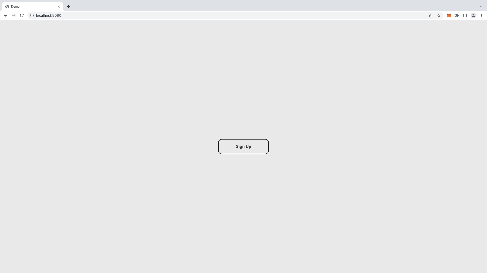
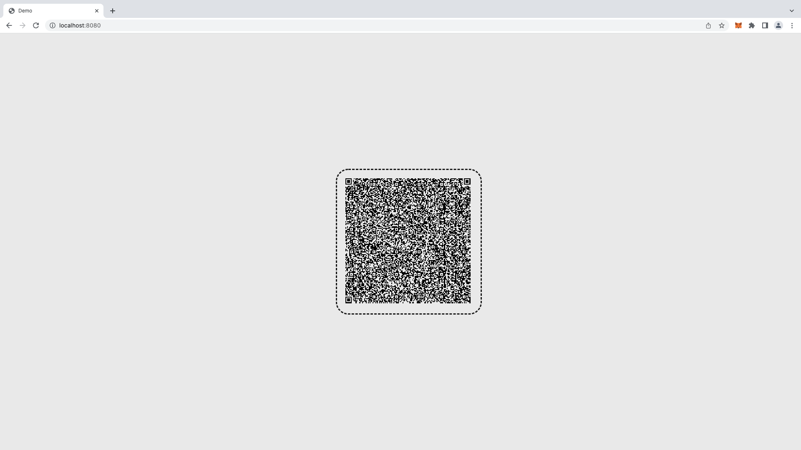

Run a Verifier
Any application that wants to authenticate user based on their Polygon ID Identity off-chain must set up a Verifier. A Verifier is made of a Server and a Client.
The Server generates the ZK Request according to the requirements of the platform. There are two types of authentication:
- Basic Auth: For example, a platform that issues claims must authenticate users by their identifiers before sharing claims with them.
- Query-based Auth: For example, a platform that gives access only to those users that are over 18 years of age.
The second role of the Server is to execute Verification of the proof sent by the Identity Wallet.
The Verifier Client is the point of interaction with the user. In its simplest form, a client needs to embed a QR code that displays the zk request generated by the Server. The verification request can also be delivered to users via Deep Linking. After scanning the zk request, the user will generate a proof based on that request locally on their wallet. This proof is therefore sent back to the Verifier Server that verifies whether the proof is valid.
This tutorial is based on the verification of a Claim of Type AgeCredential with a single attribute dateOfBirth in format age with a Schema URL
The prerequisite is that users have the Polygon ID Wallet app installed and fetched a claim of type AgeCredential attesting their date of birth. A claim with the same features can be issued using Polygon ID Platform UI or Polygon APIs.
Specifically, the verifier will set up the query: "Prove that you were born before the 2000/01/01. To set up a different query check out the ZK Query Language section
Note: The executable code for this section can be found here.
Verifier Server Setup
-
Add the authorization package to your project
go get github.com/iden3/go-iden3-authnpm i @iden3/js-iden3-auth --save -
Set up a server
Initiate a server that contains two endpoints:
- GET /api/sign-in: Returns auth request.
- POST /api/callback: Receives the callback request from the identity wallet containing the proof and verifies it.
package main import ( "encoding/json" "fmt" "io" "net/http" "strconv" "time" "github.com/iden3/go-circuits" auth "github.com/iden3/go-iden3-auth" "github.com/iden3/go-iden3-auth/loaders" "github.com/iden3/go-iden3-auth/pubsignals" "github.com/iden3/go-iden3-auth/state" "github.com/iden3/iden3comm/protocol" ) func main() { http.HandleFunc("/api/sign-in", GetAuthRequest) http.HandleFunc("/api/callback", Callback) http.ListenAndServe(":8080", nil) } // Create a map to store the auth requests and their session IDs var requestMap = make(map[string]interface{})const express = require('express'); const {auth, resolver, loaders} = require('@iden3/js-iden3-auth') const getRawBody = require('raw-body') const app = express(); const port = 8080; app.get("/api/sign-in", (req, res) => { console.log('get Auth Request'); GetAuthRequest(req,res); }); app.post("/api/callback", (req, res) => { console.log('callback'); Callback(req,res); }); app.listen(port, () => { console.log('server running on port 8080'); }); // Create a map to store the auth requests and their session IDs const requestMap = new Map(); -
Sign-in endpoint
This endpoint generates the auth request for the user. Using this endpoint, the developers set up the requirements that users must meet in order to sign in.
If created using Polygon ID Platform, the schema URL can be fetched from there and pasted inside your Query
// GetAuthRequest returns auth request func GetAuthRequest(w http.ResponseWriter, r *http.Request) { // Audience is verifier id rURL := "<YOUR REMOTE NGROK HOST>"; sessionID := 1 CallbackURL := "/api/callback" Audience := "1125GJqgw6YEsKFwj63GY87MMxPL9kwDKxPUiwMLNZ" uri := fmt.Sprintf("%s%s?sessionId=%s", rURL, CallbackURL, strconv.Itoa(sessionID)) var request protocol.AuthorizationRequestMessage // Generate request for basic auth request = auth.CreateAuthorizationRequestWithMessage("test flow", "message to sign", Audience, uri) request.ID = "7f38a193-0918-4a48-9fac-36adfdb8b542" request.ThreadID = "7f38a193-0918-4a48-9fac-36adfdb8b542" // Add query-based request var mtpProofRequest protocol.ZeroKnowledgeProofRequest mtpProofRequest.ID = 1 mtpProofRequest.CircuitID = string(circuits.AtomicQuerySigCircuitID) mtpProofRequest.Rules = map[string]interface{}{ "query": pubsignals.Query{ AllowedIssuers: []string{"*"}, Req: map[string]interface{}{ "dateOfBirth": map[string]interface{}{ "$lt": 20000101, }, }, Schema: protocol.Schema{ URL: "{add your schema url here}", Type: "AgeCredential", }, }, } request.Body.Scope = append(request.Body.Scope, mtpProofRequest) // Store zk request in map associated with session ID requestMap[strconv.Itoa(sessionID)] = request msgBytes, _ := json.Marshal(request) w.Header().Set("Content-Type", "application/json") w.WriteHeader(http.StatusOK) w.Write(msgBytes) return }// GetAuthRequest returns auth request async function GetAuthRequest(req,res) { // Audience is verifier id const hostUrl = '<YOUR REMOTE NGROK HOST>'; const sessionId = 1; const callbackURL = "/api/callback" const audience = "1125GJqgw6YEsKFwj63GY87MMxPL9kwDKxPUiwMLNZ" const uri = `${hostUrl}${callbackURL}?sessionId=${sessionId}`; // Generate request for basic auth const request = auth.createAuthorizationRequestWithMessage( 'test flow', 'message to sign', audience, uri, ); request.id = '7f38a193-0918-4a48-9fac-36adfdb8b542'; request.thid = '7f38a193-0918-4a48-9fac-36adfdb8b542'; // Add query-based request const proofRequest = { id: 1, circuit_id: 'credentialAtomicQuerySig', rules: { query: { allowedIssuers: ['*'], schema: { type: 'AgeCredential', url: '{add your schema url here}', }, req: { dateOfBirth: { $lt: 20000101, // dateOfBirth field less then 2000/01/01 }, }, }, }, }; const scope = request.body.scope ?? []; request.body.scope = [...scope, proofRequest]; // Store zk request in map associated with session ID requestMap.set(`${sessionId}`, request); return res.status(200).set('Content-Type', 'application/json').send(request); }Note: The highlighted lines are to be added only if the authentication needs to design a query for a specific proof as in the case of Query-based Auth. When not included, it will perform a Basic Auth.
-
Callback Endpoint
The request generated in the previous endpoint already contains the CallBackURL so that the response generated by the wallet will be automatically forwarded to the server callback function. The callback post endpoint receives the proof generated by the identity wallet. The role of the callback endpoint is to execute the Verification on the proof.
To ADD: The identity state
contractAddresson Polygon Mumbai is 0x46Fd04eEa588a3EA7e9F055dd691C688c4148ab3. The public verification keys for iden3 circuits generated after the trusted setup can be found here and must be added to your project inside a folder calledkeys. Also, don't forget to add the Mumbai RPC endpoint (such as Alchemy or Infura) inside theethURLvariable!// Callback verifies the proof after sign-in callbacks func Callback(w http.ResponseWriter, r *http.Request) { // Get session ID from request sessionID := r.URL.Query().Get("sessionId") // extract proof from the request tokenBytes, err := io.ReadAll(r.Body) // Add Polygon Mumbai RPC node endpoint - needed to read on-chain state ethURL := "<RPCNODEURL>" // Add identity state contract address contractAddress := "0x46Fd04eEa588a3EA7e9F055dd691C688c4148ab3" // Locate the directory that contains circuit's verification keys keyDIR := "../keys" // fetch authRequest from sessionID authRequest, _ := requestMap[sessionID] // load the verifcation key var verificationKeyloader = &loaders.FSKeyLoader{Dir: keyDIR} resolver := state.ETHResolver{ RPCUrl: ethURL, Contract: contractAddress, } // EXECUTE VERIFICATION verifier := auth.NewVerifier(verificationKeyloader, loaders.DefaultSchemaLoader{IpfsURL: "ipfs.io"}, resolver) authResponse, err := verifier.FullVerify(r.Context(), string(tokenBytes), authRequest.(protocol.AuthorizationRequestMessage)) if err != nil { http.Error(w, err.Error(), http.StatusInternalServerError) return } userID := authResponse.From messageBytes := []byte("User with ID " + userID + " Successfully authenticated") w.WriteHeader(http.StatusOK) w.Header().Set("Content-Type", "application/json") w.Write(messageBytes) return }// Callback verifies the proof after sign-in callbacks async function Callback(req,res) { // Get session ID from request const sessionId = req.query.sessionId; // extract proof from the request const raw = await getRawBody(req); const tokenStr = raw.toString().trim(); // fetch authRequest from sessionID const authRequest = requestMap.get(`${sessionId}`); // Locate the directory that contains circuit's verification keys const verificationKeyloader = new loaders.FSKeyLoader('../keys'); const sLoader = new loaders.UniversalSchemaLoader('ipfs.io'); // Add Polygon Mumbai RPC node endpoint - needed to read on-chain state and identity state contract address const ethStateResolver = new resolver.EthStateResolver('<Polygon Mumbai RPC NODE>', '0x46Fd04eEa588a3EA7e9F055dd691C688c4148ab3'); // EXECUTE VERIFICATION const verifier = new auth.Verifier( verificationKeyloader, sLoader, ethStateResolver, ); try { authResponse = await verifier.fullVerify(tokenStr, authRequest); } catch (error) { return res.status(500).send(error); } return res.status(200).set('Content-Type', 'application/json').send("user with ID: " + authResponse.from + " Succesfully authenticated"); }
If you need to deploy an App or to build a Docker container you'll need to bundle the libwasmer.so library together with the app.
Verifier Client Setup
The Verifier Client must fetch the Auth Request generated by the Server ("/api/sign-in" endpoint) and deliver it to the user via a QR Code.
To do so, add the Static Folder to your Verifier repository. This folder contains an HTML static webpage that renders a static webpage with the QR code containing the Auth Request.
To display the QR code inside your frontend, you can use the
express.staticbuilt-in middleware function together with this Static Folder or this Code Sandbox.
The same request can also be delivered to users via Deep Linking. In order to do so is necessary to encode the request file to Base64 Format. The related deep link would be iden3comm://?i_m={{base64EncodedRequestHere}}.
-
Add routing to your Express Server
To serve static files, we use the express.static built-in middleware function.
const express = require('express'); const {auth, resolver, loaders} = require('@iden3/js-iden3-auth') const getRawBody = require('raw-body') const app = express(); const port = 8080; app.use(express.static('static')); app.get("/api/sign-in", (req, res) => { console.log('get Auth Request'); GetAuthRequest(req,res); }); app.post("/api/callback", (req, res) => { console.log('callback'); Callback(req,res); }); app.listen(port, () => { console.log('server running on port 8080'); }); // Create a map to store the auth requests and their session IDs const requestMap = new Map(); -
Visit http://localhost:8080/
When visiting the URL, the users will need to scan the QR code with their id wallets.


Sign Up with Polygon ID - Client Side
-
Implement Further Logic
This tutorial showcased a minimalistic application that leverages Polygon ID libraries for authentication purposes. Developers can leverage the broad set of existing claims held by users to set up any customized Query using our zk Query Language to unleash the full potential of the framework.
For example, the concept can be extended to exchanges that require KYC claims, DAOs that require proof-of-personhood claims, or social media applications that intend to re-use users' aggregated reputation.